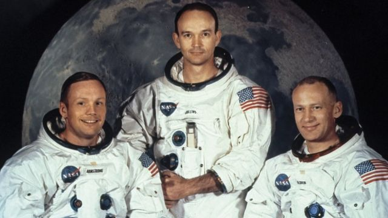

¿Quienes han llegado a la Luna?
En todos los viajes a la luna ha habido tripulantes que se han jugado la vida para ir a este pequeño satelite que siempre orbita alrededor de nosotros.

Apolo 11
La tripulación del Apolo 11 estaba constituida por el comandante de la misión Neil A. Armstrong, de 38 años; Edwin E. Aldrin Jr., de 39 años y piloto del LEM, apodado Buzz; y Michael Collins, de 38 años y piloto del módulo de mando.
El comandante Armstrong fue el primer ser humano que pisó la superficie del satélite terrestre el 21 de julio de 1969 a las 2:56.
A su llegada tuvieron que hacer tres semanas de cuarentena.
Apolo 12
El comandante de misión Charles "Pete" Conrad y el piloto de módulo lunar Alan L. Bean realizaron poco más de un día y siete horas de actividad en la superficie lunar. Mientras que ekl piloto del módulo de comando Richard F. Gordon permaneció en órbita lunar.
A diferencia del primer aterrizaje en Apolo 11, Conrad y Bean lograron un aterrizaje preciso en su ubicación esperada. Llevaron la primera cámara de televisión a color a la superficie lunar en un vuelo de Apolo, pero la transmisión se perdió después de que Bean accidentalmente destruyera la cámara al apuntar hacia el sol.

Apolo 14
El comandante Alan Shepard, el piloto del módulo de comando Stuart Roosa y el piloto del módulo lunar, Edgar Mitchell.
Shepard golpeó dos pelotas de golf en la superficie lunar con un palo improvisado que había traído consigo.

Apolo 15
Tripulantes a David R. Scott -comandante-, Alfred M.Worden y James B. Irwin.
En julio de 1972 se vieron implicados en una polémica cuando se descubrió que habían llevado a escondidas 400 cartas que franquearon en la Luna, para su venta posterior a coleccionistas filatélicos, aunque finalmente no percibieron nada, lo que les valió una amonestación de la NASA.

Apolo 16
Fue tripulada por el comandante John Young, Piloto del Módulo Lunar Charles Duke y el Piloto del Módulo de Comando Ken Mattingly.

Duke, con 36 años, fue (y sigue siendo) la persona más joven que ha pisado la Luna.
Apolo 17
Fue tripulada por el comandante John Young, Piloto del Módulo Lunar Charles Duke y el Piloto del Módulo de Comando Ken Mattingly.